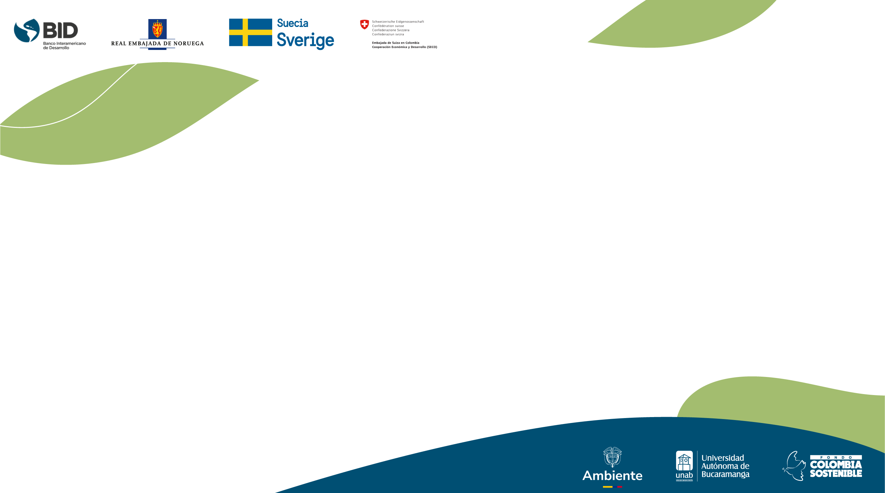
Marco normativo y legal para el manejo de los ecosistemas de guadua y bambú
Tabla de contenido
Módulo 2
Ley 2206 de 2022, principios, definiciones, categorías y registro de guaduales y bambusales.
Decreto 1532 de 2019, compilado en el Decreto 1076 de 2015: requisitos y procedimientos para el registro de guaduales y bambusales categoría 2.
Resolución 1740 de 2016: tipos de aprovechamiento, requisitos y trámites para permisos y autorizaciones.
01
02
03
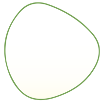
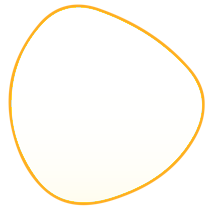
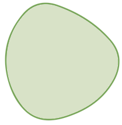
Video inicial
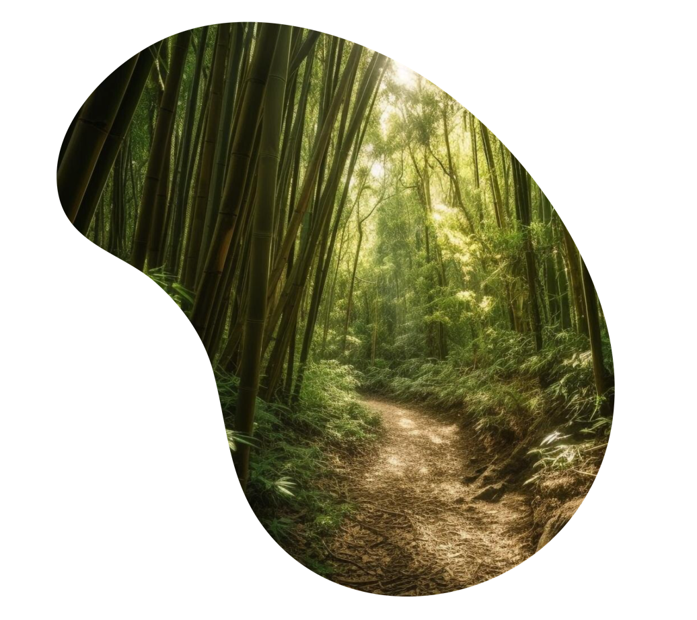
Ley 2206 de 2022, principios, definiciones, categorías y registro de guaduales y bambusales
Módulo 2
Disposiciones normativas: Ley 2206 de 2022
Módulo 2
Artículo 1°. Objeto
Artículo 2°. Objetivos específicos
Fuente
Congreso de la República de Colombia (2022).
La presente ley tiene como objeto adoptar un marco de política que incentive el uso productivo de la guadua y bambú en los diferentes sectores de la economía, tales como: industria, construcción, agroindustria y otros, en armonía con la sostenibilidad ambiental y sus servicios ecosistémicos en la mitigación de los efectos del cambio climático.
➢Estimular la producción de la guadua y bambú como un nuevo renglón económico del país, incentivando los diferentes eslabones de la cadena productiva.
➢Promover la sostenibilidad y manejo sostenible de guaduales y bambusales naturales y estimular las plantaciones comerciales de guadua y bambú.
➢Incentivar y facilitar el manejo sostenible de la guadua y los bambúes con el propósito de mitigar los efectos del cambio climático y la protección de cuencas y microcuencas.
➢Incentivar la investigación, el desarrollo tecnológico, la innovación de productos y subproductos de guadua y bambú, la normalización técnica, la estandarización y la capacitación, para un mejor manejo sostenible, transformación y comercialización, y su contribución a la generación de empleos e ingresos agropecuarios; y una mejor calidad de vida de la población.
➢Conservar la guadua y bambú como elemento importante de la identidad del paisaje rural colombiano, paisaje cultural cafetero y de otras zonas con usos ancestrales.
➢Impulsar el desarrollo empresarial en el uso de la guadua y bambú de sectores como la construcción, la industria, la agroindustria y otros.
Disposiciones normativas: Ley 2206 de 2022
Módulo 2
Artículo 3°. Clasificación
Guaduales y bambusales naturales dentro de áreas protectoras
Fuente
Congreso de la República de Colombia (2022).
Categoría
Guaduales y bambusales plantados con carácter protector y protector-productor
Categoría
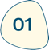
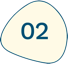
Guaduales y bambusales plantados con carácter productor
Categoría
Haz clic en cada botón para conocer su información
Categoría 1: Guaduales y bambusales naturales dentro de áreas protectoras
Son aquellas masas de guaduales y bambusales que se dan espontáneamente con poder regenerativo, y que generalmente conforman manchas casi homogéneas en el estrato superior o dominante, y con estratos inferiores conformados por flora nativa, constitutivas de bosques protectores. Que tienen como finalidad la recuperación, rehabilitación, restauración y/o manejo sostenible, teniendo mayor protección aquellos ubicados de la faja no inferior a 30 metros de ancho paralelo a cada lado de los cauces de los ríos, quebradas y arroyos; o ubicados dentro de la faja de 100 metros de ancho adyacente al perímetro de los afloramientos de agua.
Categoría 2: Guaduales y bambusales plantados con carácter protector y protector-productor
Son aquellos establecidos por el hombre con fines de recuperación de suelos, protección de cuencas hidrográficas, restauración vegetal de áreas protectoras, conservación de la biodiversidad y demás servicios ambientales. Teniendo mayor protección aquellos ubicados de la faja no inferior a 30 metros de ancho paralelo a cada lado de los cauces de los ríos, quebradas y arroyos; o ubicados dentro de la faja de 100 metros de ancho adyacente al perímetro de los afloramientos de agua. Que tienen como finalidad proveer servicios ecosistémicos, proteger otros recursos naturales y ser objeto de actividades de producción.
Las plantaciones con carácter protector se establecerán en áreas protectoras y aquellas plantaciones con carácter protector-productor, podrán establecerse en áreas protectoras o productoras. Seguirán vigentes las plantaciones en áreas protectoras-productoras que se hayan establecido con anterioridad a la entrada en vigencia de la Ley 1450 de 2011.
Categoría 3: Guaduales y bambusales plantados con carácter productor
Son aquellos establecidos por la intervención directa del hombre en áreas productoras dentro de la Frontera Agrícola.
Parágrafo 1°. Todos los guaduales y bambusales naturales y plantados podrán ser objeto de aprovechamiento con fines comerciales y la intensidad en su aprovechamiento para aquellos de categoría 1 y 2 dependerá de la evaluación técnica que realice la autoridad ambiental con base en criterios de sostenibilidad de la especie.
Parágrafo 2°. Los guaduales y bambusales naturales en áreas protectoras y aquellos plantados con carácter protector no podrán ser erradicados; solo tendrán manejo para su conservación.
Parágrafo 3°. Si un rodal de guadua ubicado dentro del área protectora supera la faja de 30 metros para cauces y de 100 metros para y/o bambusales categoría 3.
Disposiciones normativas: Ley 2206 de 2022
Módulo 2
Guaduales y bambusales categorías 1 y 2
Guaduales y bambusales categoría 3
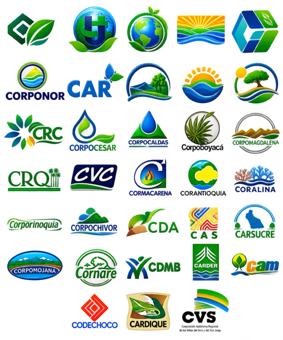
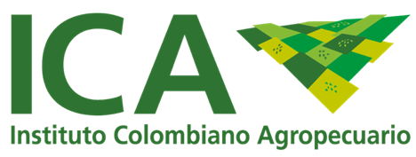
Competencias
Haz clic en cada botón para conocer su información
La administración y las competencias asociadas al registro de los guaduales y bambusales se determinan a partir de su clasificación. En este sentido, corresponde a las autoridades ambientales la gestión de los guaduales y bambusales de categoría 1 y categoría 2.
Debes tener en cuenta que las autoridades ambientales incluyen a las Corporaciones Autónomas Regionales, las de Desarrollo Sostenible, las unidades ambientales de los grandes centros urbanos a las que se refiere el artículo 66 de la Ley 99 de 1993, y los establecimientos públicos ambientales mencionados en las Leyes 768 de 2002 y 1617 de 2013, quienes deben atender los lineamientos del Ministerio de Ambiente y Desarrollo Sostenible.
Registra los guaduales y bambusales de categoría 3 ante el Instituto Colombiano Agropecuario (ICA), siguiendo la reglamentación que el Ministerio de Agricultura y Desarrollo Rural expida para este fin.
Disposiciones normativas: Ley 2206 de 2022
Módulo 2
Artículo 4°. Registro
Guaduales y bambusales naturales dentro de áreas protectoras
Categoría
Se debe realizar este registro conforme a los lineamientos que establezca el Ministerio de Ambiente y Desarrollo Sostenible, los cuales serán expedidos dentro de los seis meses siguientes a la promulgación de la Ley 2206 de 2022.
Formato de registro
Formato de registro y adjuntos
Validar VUR y RUES
Apertura del expediente y auto de inicio de trámite
Notificación Auto de Inicio
Evaluación de la información allegada y visita técnica
Concepto técnico
Solicitud información adicional
5 días hábiles
Entrega de la información adicional
Resolución
Notificación acto administrativo
Validación solicitud completa
Si
10 días hábiles
Si
No
1 mes
Si
No
Archivo
No
5 días hábiles
Información adecuada
1
2
3
4
5
6
10 días hábiles
Ver más
1. Pasos de la AA
2. Pasos interesado
3. Dependencia
4. Tiempos
5. Canales
Disposiciones normativas: Ley 2206 de 2022
Módulo 2
Artículo 4°. Registro
Guaduales y bambusales plantados con carácter protector y protector-productor
Categoría
Deberán registrarse ante la autoridad ambiental competente, de acuerdo con el Decreto número 1532 de 2019, y demás normas que lo modifiquen, sustituyan o deroguen.
Disposiciones normativas: Ley 2206 de 2022
Módulo 2
Ver más
Artículo 4°. Registro
Guaduales y bambusales plantados con carácter productor
Categoría
El registro de estos recursos se realiza ante el Instituto Colombiano Agropecuario (ICA), según la reglamentación que el Ministerio de Agricultura y Desarrollo Rural expida para tal fin en los seis meses posteriores a la promulgación de la presente ley.
Este procedimiento se fundamenta en la Ley 1955 de 2019 y en las normas que la modifiquen, sustituyan o deroguen.
Movilización
Transformación y comercialización
4
5
Disposiciones normativas: Ley 2206 de 2022
Módulo 2
Artículo 4°. Movilización
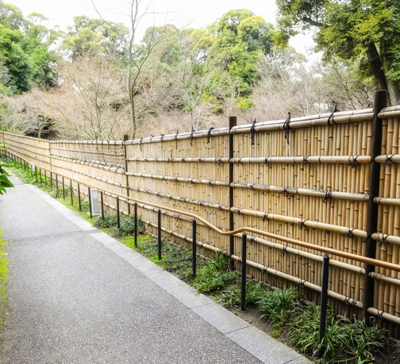
Ver más
Ver más
Incentiva su uso en armonía con la sostenibilidad ambiental y sus servicios ecosistémicos en la mitigación de los efectos del cambio climático
Categoría 1 y 2 ante autoridad ambiental
Categoría 3 ante ICA
Los clasifica acorde con su origen, localización y finalidad
La resolución establece los lineamientos generales para el manejo, aprovechamiento y establecimiento de guaduales y bambusales
Resolución 1909 de 2017
Resolución 1791 de 2019
Consideraciones finales
Módulo 2
Se sintetizan algunas conclusiones derivadas de las disposiciones de la Ley 2206 de 2022.
No clasifica la guadua como producto de la flora o agrícola
Incorpora un trámite nuevo asociado al registro de guaduales
No condiciona el aprovechamiento de guaduales y bambusales al registro
No deroga la Resolución 1740 de 2016
No exceptúa cumplimiento de disposiciones para movilización, transformación y comercialización
Pon a prueba tus conocimientos
Módulo 2
¿Cuál es el propósito principal de la Ley 2206 de 2022?
¡Selecciona la respuesta correcta!
a.
Restringir el uso de la guadua para su conservación absoluta.
b.
Incentivar el uso productivo y sostenible de la guadua y el bambú.
c.
Autorizar únicamente plantaciones con fines ornamentales.
d.
Permitir su aprovechamiento sin regulación ambiental.
Retroalimentación:
¡Acertaste!
Continúas avanzando en la construcción de tu aprendizaje.
Continuar
Retroalimentación:
Es incorrecto, puedes intentarlo de nuevo.
Reintentar
Pon a prueba tus conocimientos
Módulo 2
Categoría
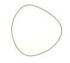
1
Categoría
2
Categoría
3
Guaduales y bambusales plantados con carácter productor
Guaduales y bambusales plantados con carácter protector y protector-productor
Guaduales y bambusales naturales dentro de áreas protectoras
Autoridades Ambientales
ICA
¡Relaciona cada categoría con su descripción y con su entidad de registro!
Retroalimentación:
¡Acertaste!
Estás construyendo muy bien tu aprendizaje.
Continuar
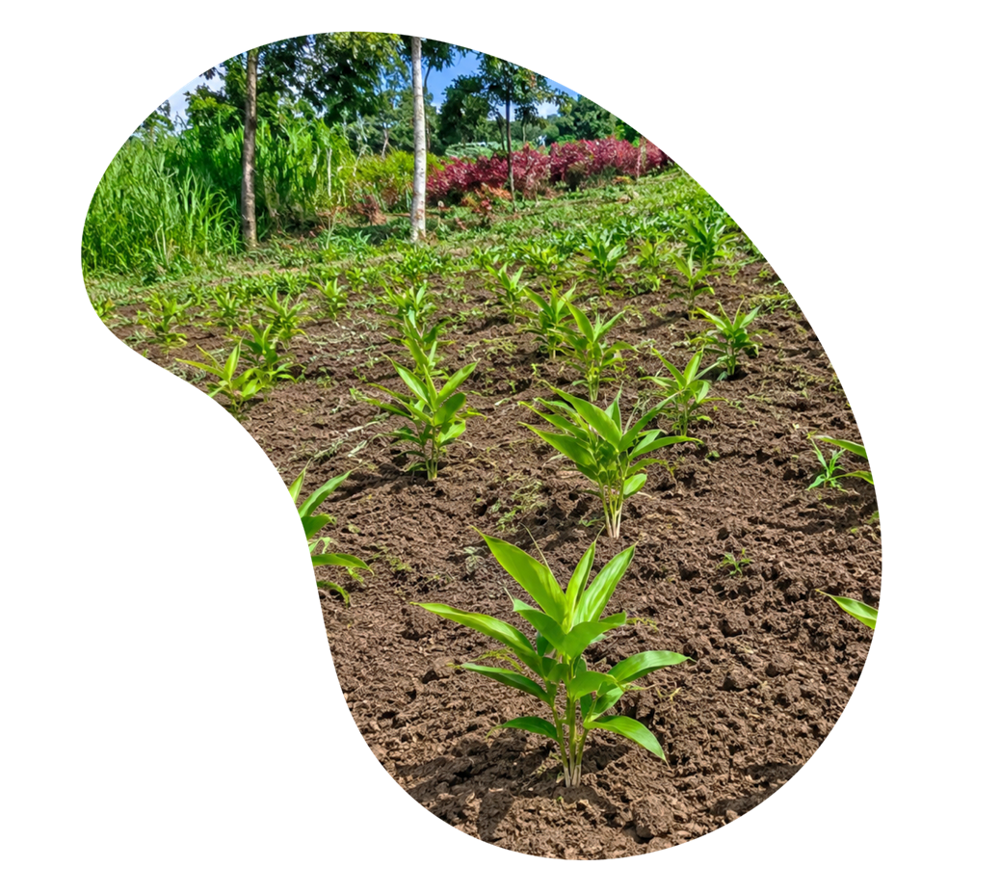
Decreto 1532 de 2019, compilado en el Decreto 1076 de 2015: requisitos y procedimientos para el registro de guaduales y bambusales categoría 2
Módulo 2
Decreto 1532 de 2019, compilado en el Decreto 1076 de 2015
Módulo 2
Artículo 2.2.1.1.12.2. Del registro.
Ámbito de aplicación
Artículo 2.2.1.1.12.2. Del registro
Artículo 2.2.1.1.12.3. Requisitos para el registro
“Las plantaciones forestales protectoras, productoras y protectoras deberán registrarse ante las autoridades ambientales regionales competentes. El registro se realizará mediante acto administrativo, previa visita y concepto técnico”.
➢Nombre y ubicación del predio, indicando vereda y municipio, dirección, si la tiene, y teléfono de contacto.
➢Mapa de localización (ruta de acceso y coordenadas).
➢En caso de persona natural, fotocopia del documento de identificación.
➢En caso de persona jurídica, certificado de existencia y representación legal no superior a treinta (30) días calendarios y fotocopia de documento representante legal.
➢Acreditar la propiedad del predio mediante certificado de tradición y libertad no superior a treinta (30) días calendario. En caso de ser arrendatario, autorización del titular del predio.
a) Diligenciar el Formulario de Solicitud de Registro.
b) Aportar los siguientes documentos:
Haz clic en cada botón para conocer su información
Ámbito de aplicación
“De acuerdo con el artículo 4º de la Ley 2206 de 2022, los guaduales y bambusales categoría 2, deberán registrarse ante la autoridad ambiental competente, de acuerdo con el Decreto número 1532 de 2019, y demás normas que lo modifiquen, sustituyan o deroguen”.
Artículo 2.2.1.1.12.2. Del registro
“Las plantaciones forestales protectoras, productoras y protectoras deberán registrarse ante las autoridades ambientales regionales competentes. El registro se realizará mediante acto administrativo, previa visita y concepto técnico”.
Artículo 2.2.1.1.12.3. Requisitos para el registro
a) Diligenciar el Formulario de Solicitud de Registro.
b) Aportar los siguientes documentos:
• Nombre y ubicación del predio, indicando vereda y municipio, dirección, si la tiene, y teléfono de contacto.
• Mapa de localización (ruta de acceso y coordenadas).
• En caso de persona natural, fotocopia del documento de identificación.
• En caso de persona jurídica, certificado de existencia y representación legal no superior a treinta (30) días calendarios y fotocopia de documento representante legal.
• Acreditar la propiedad del predio mediante certificado de tradición y libertad no superior a treinta (30) días calendario. En caso de ser arrendatario, autorización del titular del predio.
ARTÍCULO 2.2.1.1.12.4. Formación del registro
Módulo 2
Formulario de solicitud de registro
Para el registro de las plantaciones forestales mencionadas en el artículo 2.2.1.1.12.1 de la sección 12 del presente decreto, se deberán seguir los siguientes pasos:
Haz clic en cada botón para conocer su información
Mapa de localización
Revisión de la información
Finalización del Proceso
Acreditar la propiedad del predio
Formulario de solicitud de registro
El registro de guaduales y bambusales de categoría 2 se inicia mediante el diligenciamiento y la presentación del formulario de solicitud de registro ante la autoridad ambiental regional competente. Se debe adjuntar la información básica del predio, nombre y ubicación del predio, indicando vereda y municipio, la dirección si la tiene, y los datos de contacto del solicitante, ya sea persona natural o jurídica.
Mapa de localización
Se debe aportar un mapa de localización que identifique la ruta de acceso al predio y las coordenadas georreferenciadas del área del guadual o bambusal. Las personas naturales deberán adjuntar copia del documento de identidad. En el caso de personas jurídicas, se presenta el certificado de existencia y representación legal (con expedición no mayor a treinta días), junto con la copia del documento de identidad del representante legal.
Acreditar la propiedad del predio
El solicitante debe acreditar la propiedad del predio mediante el certificado de tradición y libertad con una vigencia no superior a treinta días. En caso de que la solicitud la presente un arrendatario o tenedor, se anexa la autorización del propietario.
Revisión de la información
Una vez presentada la solicitud con todos los documentos requeridos, la autoridad ambiental realizará una revisión inicial de la información. Si encuentra que falta algún requisito o documento, podrá requerir al solicitante para que complete la información. Este requerimiento se realiza una sola vez. Si el interesado no aporta la información solicitada dentro del plazo de un mes, se entenderá que desiste de la solicitud, y el trámite será archivado conforme a lo establecido en la Ley 1437 de 2011, modificada por la Ley 1755 de 2015. Cuando la información esté completa, la autoridad ambiental realizará una visita técnica al predio, con el fin de verificar en campo los datos suministrados en la solicitud. Con base en esta verificación se elaborará el concepto técnico que respalda la decisión sobre el registro.
Finalización del proceso
Finalmente, si se cumplen los requisitos establecidos, la autoridad ambiental expedirá un acto administrativo mediante el cual se registra la plantación forestal y se le asigna un número de registro. Este procedimiento deberá adelantarse en un plazo máximo de un mes contado a partir de la presentación de la solicitud por parte del interesado.
ARTÍCULO 2.2.1.1.12.5. Periodicidad del registro
Decreto 1532 de 2019, compilado en el Decreto 1076 de 2015
Módulo 2
Ver más
ARTÍCULO 2.2.1.1.12.6. Actualización del registro
Ver más
ARTÍCULO 2.2.1.1.12.7. Costo del Registro
Ver más
ARTÍCULO 2.2.1.1.12.8. Cancelación del registro
Ver más
Artículo 2.2.1.1.12.5. Periodicidad del registro
“Se registrarán por una sola vez ante la autoridad ambiental regional con jurisdicción en el área donde se encuentren ubicadas”.
Artículo 2.2.1.1.12.6. Actualización del registro
La autoridad ambiental regional competente actualizará el registro en los siguientes eventos:
• Cuando se amplíe o establezcan nuevas áreas colindantes con plantaciones forestales, previamente registradas
• Cuando se modifique el plan de establecimiento y manejo forestal.
• Cuando se presente cambio de propietario o tenedor del predio, donde se encuentre ubicada la plantación forestal.
Parágrafo. La autoridad ambiental regional competente efectuará la actualización del registro, de conformidad con la información que para el efecto allegue su titular y acorde con los pasos para el otorgamiento del registro de plantación.
Artículo 2.2.1.1.12.7. Costo del registro
La expedición del registro no tendrá ningún costo.
Artículo 2.2.1.1.12.8. Cancelación del registro
Se podrá solicitar la cancelación del registro, sin perjuicio de las actuaciones administrativas a que haya lugar.
Decreto 1532 de 2019
Módulo 2
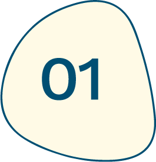
Cosecha
/Aprovechamiento
Para aprovechar las plantaciones forestales protectoras-productoras y protectoras no se requerirá de permiso o autorización.
Ver más
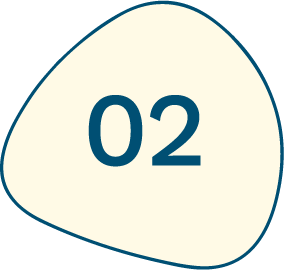
Comercialización
“Los productos forestales maderables y no maderables obtenidos del aprovechamiento de plantaciones forestales, barreras rompevientos o cercas vivas, así como de árboles de sombrío, árboles frutales y árboles aislados, podrán comercializarse”.
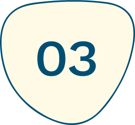
Movilización
“Para su movilización se requerirá del Salvoconducto Único Nacional en línea SUNL, de conformidad con las Resoluciones 1909 de 2017 y 081 de 2018 del Ministerio de Ambiente y Desarrollo Sostenible, o las normas que las sustituyan, modifiquen o deroguen”.
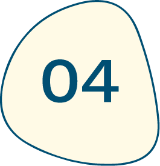
Reporte
“La autoridad ambiental regional competente reportará la información estadística relacionada con las plantaciones forestales, mencionadas en el artículo 2.2.1.1.12.2. del presente Decreto (1532 de 2019)”.
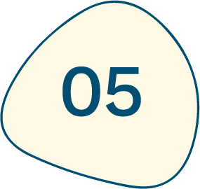
Restricciones
“No podrá realizarse la remoción del bosque natural para el establecimiento de plantaciones forestales protectoras y protectoras - productoras”.
Haz clic en cada tarjeta para conocer su información
Cosecha y aprovechamiento
En cumplimiento de las disposiciones del decreto, el titular del registro presenta, dos meses antes de iniciar la cosecha, un informe técnico ante la autoridad ambiental competente con el siguiente contenido:
• Si el interesado en aprovechar la plantación no es el mismo propietario del predio, deberá allegar autorización no mayor a treinta (30) días otorgada por éste.
• Sistema o métodos de aprovechamiento a aplicar.
• Extensión del área a intervenir en hectáreas de la plantación protectora o protectora-productora.
• Especies a aprovechar, volumen o cantidad de los productos a obtener.
Pon a prueba tus conocimientos
Módulo 2
¿Para qué categoría de guadual y bambusal aplican las disposiciones del Decreto 1532 de 2019 compilado en el Decreto 1076 de 2017?
¡Selecciona la respuesta correcta!
a.
Categoría 3
b.
Categoría 1
c.
Categoría 2
d.
Ninguna
Retroalimentación:
¡Acertaste!
Estás construyendo muy bien tu aprendizaje.
Continuar
Retroalimentación:
Es incorrecto, puedes intentarlo de nuevo.
Reintentar
Pon a prueba tus conocimientos
Módulo 2
¿Si tengo un guadual y bambusal establecido en área protectora, ante qué entidad debo realizar el registro del mismo?
¡Selecciona la respuesta correcta!
a.
Autoridad Ambiental Competente
b.
ICA
c.
Ministerio de Ambiente y Desarrollo Sostenible
d.
Ninguna
Retroalimentación:
¡Acertaste!
Estás construyendo muy bien tu aprendizaje.
Continuar
Retroalimentación:
Es incorrecto, puedes intentarlo de nuevo.
Reintentar
Objeto:
4. El manejo sostenible de ecosistemas de guaduales y bambusales Categorías 1 y 2
Propone el concepto de Manejo Sostenible
Incorpora el sistema nacional de trazabilidad forestal como parte del procedimiento
Incorpora un capítulo específico para ecosistemas de guaduales y bambusales Categorías 1 y 2
Consideraciones
Módulo 2
Se sintetizan las conclusiones derivadas del Decreto 1532 de 2019 (compilado en el Decreto 1076 de 2015) y su actualización normativa.
Incorpora los guaduales y bambusales como un ecosistema diferenciado
Modifica el concepto de aprovechamiento y cosecha
Ratifica disposiciones para movilización, transformación y comercialización
Deroga la Resolución 1740 de 2016, modifica los aspectos relacionados con Decreto 1532 de 2019
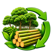
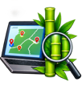
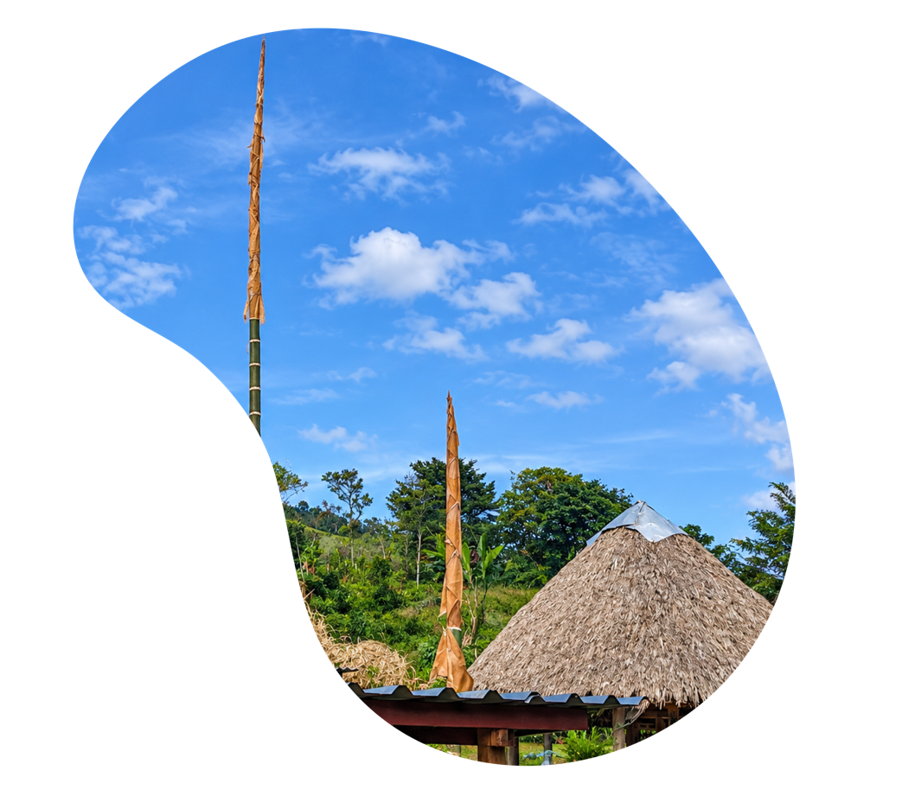
Módulo 2
Resolución 1740 de 2016: tipos de aprovechamiento, requisitos y trámites para permisos y autorizaciones
Definiciones
Resolución 1740 de 2016
Módulo 2
Categoría
1
Categoría
2
Certificados internacionales, tanto naturales como establecidos con fines de protección y de protección-producción
Núcleos de guaduales y/o bambusales naturales y establecidos con fines de protección y de protección- producción
Guaduales y bambusales establecidos con fines de protección-producción
Guaduales y bambusales establecidos con fines de protección
Guaduales y bambusales naturales
Definiciones
Aprovechamiento Tipo 1
Los lineamientos generales establecidos en la presente Resolución 1740 de 2016, son una herramienta de consulta obligatoria y de orientación para las autoridades ambientales y los particulares, para el manejo, aprovechamiento y establecimiento de guaduales y/o bambusales, para lo cual es necesario conocer y comprender las siguientes definiciones.
Haz clic en cada botón para conocer su información
Aprovechamiento Tipo 2
Empresa forestal
Manejo silvicultural del guadual y/o bambusal
Asistencia técnica forestal
Resolución 1740 de 2016
Módulo 2
Aprovechamiento Tipo 1
Es aquel aprovechamiento de guaduales y/o bambusales que se realiza en áreas iguales o menores a una (1) hectárea.
Aprovechamiento Tipo 2
Es aquel aprovechamiento de guaduales y/o bambusales que se realiza en áreas superiores a una (1) hectárea.
Asistencia técnica forestal
Es el servicio que prestan ingenieros, técnicos y tecnólogos forestales o profesionales afines titulados, o firmas especializadas en la materia, cuyo fin es el de acompañar directa y presencialmente a los usuarios en la planeación y ejecución de las actividades de manejo, aprovechamiento y establecimiento de guaduales y bambusales mediante la aplicación de conocimientos y tecnologías apropiadas.
Empresa forestal
Son aquellas cuya clasificación está contenida en el artículo 2.2.1.1.11.1 del Decreto 1076 de 2015, y demás normas que la modifiquen, sustituyan o deroguen.
Manejo silvicultural del guadual y/o bambusal
Son aquellas actividades que se realizan a los guaduales y bambusales, tales como, socola o rocería (de carácter ligero o suave); desganche o poda; recuperación de claros en el bosque; extracción de guaduas y bambúes secos, partidos, enfermos e inclinados; manejo y distribución de residuos del aprovechamiento; marcación de renuevos; prevención y control de incendios forestales; fertilización; mantenimiento de caminos de extracción forestal y limpieza de cauces.
Haz clic en cada botón para conocer su información
Definiciones
Estudio para cambio definitivo en el uso del suelo
Respecto a la documentación técnica, la normativa vigente establece los siguientes estudios para su presentación:
Estudio para aprovechamiento Tipo 1
Estudio de establecimiento y manejo de guaduales y/o bambusales
Estudio para aprovechamiento Tipo 2
Resolución 1740 de 2016
Módulo 2
Estudio para cambio definitivo en el uso del suelo
Se presenta cuando en el área donde se encuentre ubicado el guadual y/o bambusal natural o plantado, se pretenda hacer un cambio definitivo en el uso del suelo por razones de utilidad pública e interés social, o porque se demuestre una mejor aptitud de uso del suelo. Este plan debe contener la descripción de los sistemas, métodos y equipos a utilizar.
Estudio para aprovechamiento Tipo 1
Se presenta cuando pretenda llevarse a cabo el aprovechamiento de guadual y/o bambusal natural Tipo 1. Este estudio es elaborado por la autoridad ambiental regional competente.
Estudio para aprovechamiento Tipo 2
Contiene los sistemas, métodos y equipos a utilizar para el aprovechamiento del guadual y/o bambusal natural Tipo 2, ubicado en propiedad pública o privada; así como las medidas para prevenir, mitigar y corregir los posibles efectos e impactos negativos causados por el aprovechamiento de estas especies. Este estudio debe ser elaborado y presentado ante la autoridad ambiental regional por el interesado en el aprovechamiento.
Estudio de establecimiento y manejo de guaduales y/o bambusales
Contiene las normas técnicas de la silvicultura para establecer, desarrollar, mejorar, conservar y aprovechar guaduales y/o bambusales con fines de protección y de protección-producción, de acuerdo con los principios de utilización racional y manejo sostenible de los recursos naturales renovables y del medio ambiente. Este estudio debe ser elaborado y presentado ante la autoridad ambiental regional por el interesado.
¿Por qué se solicita un estudio técnico?
Módulo 2
Los estudios permiten conocer las características del guadual, planificar la intervención y demostrar que el aprovechamiento puede realizarse sin comprometer la permanencia del recurso.
La diferencia entre los estudios responde a las características y condiciones del aprovechamiento. La información técnica ayuda a tomar decisiones acordes con el tamaño del área y el nivel de intervención.
Estudio Tipo 1 / Tipo 2
¿Sabías qué?
Módulo 2
son las acciones planificadas para cuidar, mantener, recuperar y aprovechar el guadual, procurando que el recurso pueda mantenerse en el tiempo.
es una modalidad de aprovechamiento que se desarrolla bajo las condiciones y requisitos establecidos para este tipo de intervención.
es una modalidad que requiere un estudio técnico más detallado para demostrar que la intervención puede realizarse de manera responsable y sostenible.
acompañamiento especializado para orientar las actividades de manejo y aprovechamiento del guadual, conforme a criterios técnicos y ambientales.
Asistencia técnica forestal:
Aprovechamiento Tipo 2:
Aprovechamiento Tipo 1:
Manejo silvicultural:
Solicitud de aprovechamiento de guadua y/o bambusal
El interesado en el aprovechamiento de guadua o bambusal presenta ante la autoridad ambiental los siguientes requerimientos:
Haz clic en cada botón para conocer su información
Resolución 1740 de 2016
Módulo 2
Solicitud escrita
Acreditar la calidad de tenencia
Se adjunta el estudio correspondiente
1. Solicitud escrita
Para el aprovechamiento de guadua o bambú, el interesado presenta una solicitud escrita con el siguiente contenido mínimo:
a). Nombre, identificación y dirección domiciliaria del solicitante.
b). Cuando el peticionario sea una persona jurídica, se aportará el certificado de existencia y representación legal, y el RUT.
c). Identificación, localización y extensión del predio, en caso de propiedad privada, donde se encuentra ubicado el guadual y/o bambusal objeto de la solicitud de aprovechamiento, indicando jurisdicción departamental, municipal y veredal.
d). Localización y extensión del área, cuando el guadual y/o bambusal objeto de la solicitud de aprovechamiento se encuentre ubicado en terrenos de dominio público, indicando jurisdicción departamental, municipal y veredal.
2. Acreditar la calidad de tenencia del propietario del predio
Privado individual o colectivo: mediante copia del certificado de tradición y libertad del inmueble respectivo, con una fecha de expedición no mayor a tres (3) meses; o en su defecto, prueba sumaria que demuestre la calidad de tenedor.
Grupos asociativos y organizaciones campesinas legalmente constituidas: acta firmada por el presidente y secretario de la junta directiva, mediante la cual se autorice al representante legal para adelantar el trámite de solicitud correspondiente.
Poseedor de predio de propiedad privada individual: documento que acredite su condición de propietario o poseedor, conforme a la normativa vigente, incluyendo sentencia judicial o escritura pública expedida por notario público para los estratos 1 y 2 de conformidad con la Ley 1183 de 2008, debidamente registrada ante la oficina de instrumentos públicos correspondiente.
Consejos comunitarios y resguardos indígenas: resolución de declaratoria y constitución, así como los documentos que acrediten la calidad de su representante legal, expedidos por el Ministerio del Interior o la entidad que haga sus veces.
Ocupantes de baldíos de la Nación: certificación que acredite la condición de ocupante emitida por la junta de acción comunal, la administración municipal o distrital correspondiente, o por la Agencia Nacional de Tierras, o la entidad que haga sus veces.
3. Se adjunta el estudio correspondiente
Se adjunta el estudio correspondiente al área y tipo de aprovechamiento. Según lo dispuesto en la resolución, estos estudios deben ser elaborados por un ingeniero forestal, un profesional con posgrado en silvicultura, una firma especializada o un equivalente, conforme a las directrices vigentes de los Ministerios de Trabajo o Educación vigentes.
¿Sabías qué?
Módulo 2
permite dejar claro qué se quiere realizar, y facilita que la autoridad ambiental conozca el propósito del aprovechamiento.
permite verificar quién tiene la relación legal con el predio, y quién asume la responsabilidad sobre la intervención.
aporta la información necesaria para valorar las condiciones del guadual y planificar un aprovechamiento responsable.
Estudio correspondiente:
Acreditar la tenencia:
Solicitud escrita:
Resolución 1740 de 2016
Módulo 2
1
3
5
2
4
6
Trámite del registro
7
8
Radicada la solicitud con todos los requisitos
Información adicional
Desistimiento y archivo
(rec. de reposición)
Presenta la solicitud nuevamente
3 días - acto de inicio del trámite
10 días siguientes a la visita, o vencido el término sin visita
No se allega la información adicional
Evalúa la solicitud, los requisitos y visita (si es necesario)
Allegar información adicional
Devuelve la totalidad de la documentación aportada
Resolución motivada otorga o niega el permiso o la autorización
10 días siguientes
1 mes - prorrogable 1 mes
Recurso de reposición
Haz clic en cada botón para conocer su información
Radicar: presentar la solicitud y la documentación requerida.
Revisar: la autoridad evalúa la solicitud y verifica los requisitos.
Solicitar información adicional: cuando es necesario, se solicita completar o aclarar información.
Entregar información: el interesado aporta la información solicitada dentro del plazo establecido.
Devolver: si corresponde, se devuelve la documentación aportada.
Archivar: si no se presenta la información requerida, puede producirse el desistimiento y archivo.
Decidir: se expide una resolución que otorga o niega el permiso o autorización.
Recurrir: cuando proceda, el interesado puede presentar recurso de reposición.
Resolución 1740 de 2016
Módulo 2
¿Qué debe incluir el estudio
para aprovechar guadua?
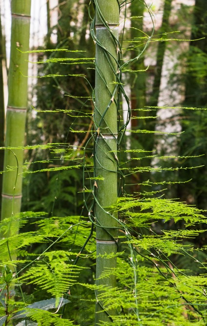
¿Dónde y Qué vamos a aprovechar?
Registro de Aprovechamiento: contenido del estudio tipo 1
Módulo 2
En cuanto al contenido del estudio para el aprovechamiento tipo uno, el documento presentado por el interesado debe incluir, como mínimo, los siguientes aspectos:
Localización administrativa:
Identificación del predio (Departamento, Municipio y Vereda).
Fase 1 - Ubicación e Identificación
Georreferenciación:
Localización y extensión exacta del área que ocupa el guadual dentro del predio (coordenadas).
Área de intervención:
Total de hectáreas (Ha) objeto de la solicitud.
Taxonomía:
Identificación de las especies presentes en el guadual y/o bambusal.
Ver más
¿Por qué necesitamos conocer dónde y qué vamos a aprovechar?
La localización y georreferenciación permiten saber exactamente dónde está el guadual y cuál es el área que se propone intervenir. La taxonomía ayuda a identificar las especies presentes para asegurar que el aprovechamiento corresponda a los recursos autorizados.
Registro de Aprovechamiento: contenido del estudio tipo 1
Módulo 2
Fase 2 - Inventario y Volumen
Ver más
Estado de madurez de los culmos (clasificación obligatoria en el área):
Renuevo / Verde
Madura (punto óptimo):
Sobremadura / Seca
Volumen a obtener:
Cuantificación del volumen total proyectado por cada especie.
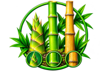
¿Por qué debemos conocer la madurez de los culmos?
Debemos conocer la madurez de los culmos porque esto nos permite identificar cuáles están en crecimiento, cuáles ya están maduros y cuáles han pasado su etapa adecuada. De esta manera, podemos planificar mejor cuáles se pueden cortar, evitando afectar innecesariamente el crecimiento y la renovación del guadual.
Registro de Aprovechamiento: contenido del estudio tipo 1
Módulo 2
Fase 3 - Planificación temporal, cronograma y sostenibilidad
Ver más
Parámetros de Extracción
Duración del aprovechamiento según:
➢Oferta y renovabilidad del recurso.
➢Intensidad y periodos de ejecución.
Plan de Trabajo
Cronograma detallado de todas las actividades (desde la adecuación hasta la poscosecha).
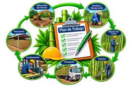
¿Por qué se planifica el tiempo de aprovechamiento?
Renovabilidad: el aprovechamiento debe considerar la capacidad del guadual para recuperarse y continuar ofreciendo sus servicios ecosistémicos.
Cronograma: organiza las actividades y ayuda a controlar que la intervención se realice de acuerdo con lo planificado.
Registro de Aprovechamiento: contenido del estudio tipo 1
Módulo 2
Fase 4 - Operación y salidas del proceso
El cumplimiento de estas fases con sus respectivos requisitos asegura la legalidad del aprovechamiento forestal.
Métodos y equipos:
Sistemas de corte, herramientas y maquinaria a utilizar.
Planificación de infraestructura:
Diseño de vías de saca, campamentos y patios de acopio.
Portafolio de productos:
Descripción de los productos finales (postes, esterilla, artesanal, etc.).
Ver más
¿Por qué se deben definir métodos, equipos e infraestructura?
Métodos y equipos: permiten seleccionar formas de corte y herramientas que reduzcan daños innecesarios al guadual y al terreno.
Infraestructura: la planificación de vías, campamentos y patios de acopio ayuda a organizar la operación y a disminuir impactos sobre el entorno.
Productos: definir los productos permite relacionar el aprovechamiento con su uso final, y evitar una extracción sin propósito claro.
¿Qué es el estudio para el aprovechamiento tipo 2?
Módulo 2
Contexto y propósito
Protege el recurso
Garantiza que el guadual pueda recuperarse y seguir produciendo después del corte.
El aprovechamiento tipo 2 permite cortar guadua o bambú en áreas entre 1 y más de 3 hectáreas con fines comerciales o productivos. Antes de hacerlo, la ley exige presentar un documento técnico que demuestre que el recurso se usará de forma responsable.
Cumple la ley
Sin este estudio, la autoridad ambiental (CAR) no puede otorgar el permiso de aprovechamiento.
Planifica el trabajo
Obliga a pensar de antemano cuánto hay, cómo se corta y qué impactos puede haber.
Ya sabes que la Resolución 1740 clasifica los aprovechamientos en tipos según el área. El tipo 2 aplica cuando el área a intervenir supera 1 hectárea. En los módulos anteriores viste los requisitos de registro del guadual, este estudio es el paso siguiente: demuestra técnicamente que el aprovechamiento es viable.
Nombre del departamento, municipio y vereda donde está el guadual. También el nombre del propietario del terreno.
→ Es como la "dirección" legal del guadual.
Plano del terreno completo. La escala 1:10.000 significa que 1 cm en el mapa equivale a 100 metros en la realidad.
Ubicación exacta (georreferenciada con GPS) del guadual dentro del terreno.
No todo el predio, solo donde está el bambú.
Cuántas hectáreas se quieren intervenir. 1 hectárea = 10.000 m² = aprox.
un campo de fútbol y medio.
Mapa más detallado, solo del área a cortar. A esta escala, 1 cm = 10 metros.
Permite ver la ubicación con precisión.
Haz clic en cada botón para conocer su información
Identificación y localización del predio
Módulo 2
Identificación del predio
Mapa del predio (escala 1:10.000)
Área del guadual dentro del predio
Hectáreas a aprovechar
Mapa del área a aprovechar (1:1.000)
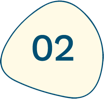
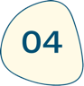
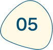
Numerales 1 al 5
En relación con el contenido del estudio para el aprovechamiento tipo dos, el documento presentado por el interesado deberá contener, como mínimo, los siguientes aspectos:
Ver más
Glosario visual de escalas
➢Escala 1:10.000: 1 cm en el mapa representa 100 metros en el territorio.
➢Escala 1:1.000: 1 cm en el mapa representa 10 metros en el territorio. Se utiliza para observar con mayor detalle el área que se pretende intervenir.
¿Por qué importa?
Una escala más detallada permite ubicar con mayor precisión el área del guadual que será objeto de aprovechamiento.
Entorno del guadual: caracterización físico-biótica
Módulo 2
Numeral 6 y 6.1
Descripción detallada de las características naturales del lugar: el agua, el suelo, las pendientes, las plantas y los animales que conviven con el guadual. Es como hacer una "radiografía" del ecosistema antes de intervenir.
Para todos los predios
Mapa de ríos y quebradas (escala ≥ 1:5.000)
Identifica fuentes de agua cercanas
Historial de aprovechamientos anteriores
¿Se ha cortado aquí antes?
Topografía y paisaje del área
¿Qué tan plano o inclinado es el terreno?
Descripción de microcuencas
Pequeñas cuencas hidrográficas del área
Vegetación y fauna de la zona
¿Qué plantas y animales hay alrededor?
Caracterización físico-biótica
Solo si el área es > 3 hectáreas
Mapa de pendientes del área
¿Qué tan inclinado está el terreno del guadual?
Mapa de drenajes internos y externos
¿Cómo fluye el agua dentro y fuera del área?
Acueductos veredales que dependen del área
¿Hay comunidades que toman agua de estas fuentes?
Zona de vida — metodología de Holdridge
Clasificación ecológica del clima y la vegetación
Ver más
¿Qué información debemos conocer sobre el entorno del guadual antes de realizar su aprovechamiento?
Para responder a esta pregunta, es importante conocer las características naturales del lugar y su relación con el agua, la vegetación, la fauna y las comunidades que lo habitan.
Mapa de ríos y quebradas: permite identificar las fuentes de agua cercanas al guadual. Esta información ayuda a planificar el aprovechamiento, procurando proteger las fuentes hídricas y los servicios que prestan a la comunidad.
Microcuenca: es el área del territorio cuyas aguas drenan hacia una misma fuente. Conocerla ayuda a comprender cómo se mueve el agua alrededor del guadual.
Caracterización físico-biótica: es una descripción de las condiciones naturales del lugar: agua, suelo, relieve, vegetación y fauna. Puede entenderse como una 'radiografía' del ecosistema antes de intervenirlo.
Acueductos veredales: se identifican para reconocer si existen comunidades que dependen de las fuentes de agua relacionadas con el área, y considerar esta relación durante la planificación.
Metodología de Holdridge: es una forma de clasificar las condiciones ecológicas de un territorio a partir de características climáticas y de vegetación. Ayuda a comprender el ambiente donde se encuentra el guadual.
Predios públicos e identificación de especies
Módulo 2
Numerales 7 y 8
Solo cuando el predio es de propiedad pública
N.° de personas y familias colindantes
¿Cuánta gente vive cerca del área?
Identificación de las especies
Identificación de las especies de guadua y/o bambú que serán objeto de aprovechamiento.
¿Qué es?
Predio público
Terreno que pertenece al Estado, a un municipio o a una entidad oficial (no a un particular).
¿Por qué identificar la especie?
No todos los bambúes son iguales. El permiso aplica solo a las especies declaradas.
¿Qué es?
Además de todo lo anterior, se debe presentar una caracterización socioeconómica:
Valores culturales de las comunidades
Tradiciones, costumbres ligadas al guadual
Valores arqueológicos del área
¿Hay sitios de interés histórico o patrimonial?
Valores históricos de la comunidad local
Historia del territorio y su relación con el bambú
Haz clic en cada botón para conocer su información
El guadual como parte de la cultura y del territorio
Módulo 2
Los valores culturales e históricos no son solo un requisito
Uso artesanal
Uso constructivo tradicional
Saberes de la comunidad
Paisaje Cultural Cafetero
Permiten reconocer la relación que las comunidades han construido con el guadual a lo largo del tiempo.
Reconocer prácticas tradicionales de transformación de la guadua para la elaboración de objetos, utensilios y artesanías permite valorar conocimientos transmitidos entre generaciones.
En diferentes territorios la guadua ha sido utilizada en viviendas, estructuras rurales y otros espacios. Estos usos forman parte de la memoria y de las prácticas locales.
Los conocimientos sobre selección, corte, manejo, transformación y utilización de la guadua constituyen aportes que pueden dialogar con el conocimiento técnico para promover un manejo sostenible.
La guadua también forma parte de la identidad de territorios, donde sus usos tradicionales se relacionan con la vida rural y la cultura.
Reconocer esta dimensión permite comprender el valor integral del ecosistema.
¿Cuántos guaduales hay y en qué estado están? - Inventario forestal
Módulo 2
Numeral 9
Área entre 1 hectárea y 3 hectáreas
Muestreo aleatorio simple
Área mayor a 3 hectáreas
Se trazan parcelas de medición en posiciones al azar dentro del guadual. Es como lanzar al azar cuadrantes de muestra sobre el mapa.
Error de muestreo ≤ 15%
Confiabilidad del 95%
Parcelas distribuidas al azar
Renuevo
Muy joven
Verde
En crecimiento
Madura
Lista para cortar
Sobremadura
Muy antigua
Seca
Sin uso
¿Qué es?
Inventario forestal
Conteo sistemático y ordenado de todos los tallos (culmos) de guadua en el área, registrando cuántos hay, qué tan maduros están y qué volumen comercial tienen. Es como hacer un censo de la guadua antes de cortarla.
Muestreo estratificado o por conglomerados
El área se divide en zonas o grupos (estratos) según características similares, y se mide una muestra de cada zona. Más preciso para áreas grandes.
Error de muestreo ≤ 15%
Confiabilidad del 95%
Estratos o conglomerados de parcelas
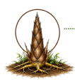
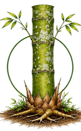
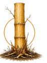
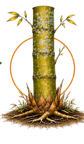
Estados de madurez del culmo que se deben registrar:
Glosario
Inventario forestal: es un conteo organizado de los culmos del guadual para conocer cuántos hay, en qué estado se encuentran y qué volumen comercial representan.
Muestreo aleatorio simple: se seleccionan parcelas al azar para obtener información representativa del área, sin tener que medir cada culmo.
Muestreo estratificado: el área se divide en zonas con características similares, y se toman muestras en cada zona. Es útil cuando existen diferencias dentro de áreas grandes.
Error de muestreo y confiabilidad: son indicadores que permiten valorar qué tan representativos son los resultados obtenidos mediante las parcelas seleccionadas.
Duración permitida según el tamaño del área
Componentes de la planificación operativa
Tabla o diagrama que muestra cuándo se hará cada actividad durante todo el periodo o UCA. Incluye corte, extracción, manejo y reporte.
Descripción de las herramientas (machetes, motosierras, cables) y técnicas de corte que se usarán para no dañar el guadual joven.
Planeación de vías de acceso, campamentos temporales y patios de acopio donde se almacena la guadua antes de transportarla.
Duración y planificación
Módulo 2
Numerales 10 al 13
¿Qué es?
UCA — Unidad de Corta Anual
Si el aprovechamiento dura más de 12 meses, el área se divide en partes iguales y se trabaja una por año. El guadual tiene tiempo de recuperarse antes de la siguiente intervención.
Tamaño del área
Duración máxima
¿Necesita UCA?
1 hectárea, hasta 3 hectáreas
Más de 3 hectáreas
Máximo 12 meses
Según oferta del recurso
No aplica
Sí, si supera los 12 meses
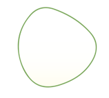
11
12
13
Cronograma de actividades
Métodos y equipos
Diseño operativo
Ver más
¿Por qué se utiliza la Unidad de Corta Anual (UCA)?
UCA – Unidad de Corta Anual: es una forma de organizar el aprovechamiento por periodos anuales cuando la intervención supera el tiempo establecido para un solo periodo.
Finalidad ambiental: dividir el área por años permite ordenar la intervención y dar tiempo al guadual para recuperarse antes de una nueva intervención.
¿Qué productos se obtendrán?
¿Cómo se evitan daños al ambiente?
¿Cómo se mejora el guadual?
¿Qué se obtiene y cómo se cuida el guadual?
Módulo 2
Numerales 14 al 16
Haz clic en cada botón para conocer su información
Se debe describir qué saldrá del aprovechamiento:
Tipo: rolliza, laminada, carbón, artesanía, pulpa.
Dimensiones estimadas de los productos.
Uso final: construcción, exportación, artesanía.
Destino: venta local, industria, autoconsumo.
Medidas para manejar los impactos negativos:
Prevenir: actuar antes de que ocurra el daño.
Mitigar: reducir el impacto si ya ocurrió.
Corregir: restaurar lo afectado después del corte.
Ejemplo: no cortar en épocas de lluvia intensa.
Acciones para que el guadual produzca más y mejor:
Chusqueo: eliminar ramas secas y hojas viejas.
Entresaca sanitaria: retirar tallos secos o muy viejos.
Fertilización y manejo de drenajes si aplica.
Monitoreo y seguimiento periódico del rodal.
01
02
03
04
¿Por qué debemos saber cuánta área se va a aprovechar?
¿Por qué debemos conocer el área que ocupa el guadual?
¿Por qué necesitamos un mapa del predio?
Resolución 1740 de 2016
Módulo 2
Contenido del estudio tipo 2 con POF
Identificación, localización y extensión del predio
Mapa del predio
Área del guadual dentro del predio
Área total a aprovechar
En cuanto al contenido del estudio para el aprovechamiento tipo dos en áreas con plan de ordenación forestal, el interesado presenta un documento que contiene, como mínimo, los siguientes requerimientos:
¿Dónde está ubicado el guadual?
Haz clic en cada botón para conocer su información
Primero necesitamos saber exactamente dónde se encuentra el guadual y en qué predio está ubicado. Esta información permite identificar con claridad el lugar donde se realizará el aprovechamiento.
Identificación, localización y extensión del predio donde se encuentra ubicado el guadual y/o bambusal objeto de la solicitud de aprovechamiento, indicando jurisdicción departamental, municipal y veredal.
El mapa permite observar el terreno en su conjunto y ubicar el guadual dentro de él. Así podemos conocer mejor el lugar antes de planificar las actividades.
Mapa del predio a escala no mayor a 1:5000.
Es importante saber qué parte del predio ocupa el guadual. Esto permite delimitar el área que se tendrá en cuenta y evitar intervenir zonas que no corresponden.
Localización y extensión del área georreferenciada que ocupa el guadual y/o bambusal dentro del predio.
Conocer el tamaño del área permite planificar el aprovechamiento de acuerdo con la cantidad de recurso disponible y con las condiciones del lugar.
Área total en hectáreas que será objeto de aprovechamiento.
¿Por qué debemos conocer cuánta guadua hay y en qué estado está?
¿Por qué debemos identificar las especies?
Resolución 1740 de 2016
Módulo 2
Contenido del estudio tipo 2 con POF
05
Mapa del área a aprovechar
06
Identificación de las especies
07
Inventario y estado de madurez
En cuanto al contenido del estudio para el aprovechamiento tipo dos en áreas con plan de ordenación forestal, el interesado presenta un documento que contiene, como mínimo, los siguientes requerimientos:
¿Por qué necesitamos un mapa más detallado?
Haz clic en cada botón para conocer su información
Este mapa permite observar con mayor precisión el área donde se realizará el aprovechamiento, y ayuda a organizar mejor las actividades.
Mapa del área objeto de aprovechamiento a escala 1:1000.
Identificar las especies permite saber exactamente qué recurso se pretende aprovechar, y tener en cuenta sus características durante la planificación.
Identificación de las especies de guadua y/o bambusal que serán objeto de aprovechamiento.
Antes de cortar es necesario conocer la cantidad y el estado de los tallos o culmos. Esto permite planificar qué se puede aprovechar, conservar los que todavía están creciendo y favorecer la renovación del guadual.
Diseño del inventario forestal para determinar la cantidad de culmos en el área y su estado de madurez (renuevo, verde, madura, sobremadura y seca) y volumen comercial, así:
a). Cuando el área oscile entre: más de una (1) hectárea y hasta tres (3) hectáreas, la metodología para el inventario será muestreo aleatorio simple (parcelas al azar), con un error de muestreo menor o igual al 15% y una probabilidad del 95%.
b). Cuando el área sea superior a tres (3) hectáreas, la metodología para el inventario forestal será la de muestreo aleatorio estratificado, o muestreo aleatorio por conglomerados (conglomerado de parcelas o fajas), con un error de muestreo igual o inferior al 15% y una probabilidad del 95%.
08
09
10
11
¿Por qué debemos planificar los lugares de trabajo y almacenamiento?
¿Por qué debemos definir cómo y con qué herramientas se realizará?
¿Por qué debemos organizar las actividades en el tiempo?
Resolución 1740 de 2016
Módulo 2
Contenido del estudio tipo 2 con POF
Duración del aprovechamiento
Cronograma
Métodos y equipos
Planificación del aprovechamiento
En cuanto al contenido del estudio para el aprovechamiento tipo dos en áreas con plan de ordenación forestal, el interesado presenta un documento que contiene, como mínimo, los siguientes requerimientos:
¿Por qué debemos definir cuánto tiempo durará?
Haz clic en cada botón para conocer su información
Definir el tiempo permite organizar el aprovechamiento de acuerdo con la cantidad de recurso disponible y con el tiempo que necesita el guadual para recuperarse.
Duración del aprovechamiento:
a) Cuando el área oscile entre: más de una (1) hectárea y hasta tres (3) hectáreas, la duración máxima de estos aprovechamientos será de 12 meses, de acuerdo con la oferta del recurso, su renovabilidad, intensidad del aprovechamiento y el periodo de ejecución de la actividad productiva.
b) Cuando el área sea superior a tres (3) hectáreas, la duración de este aprovechamiento dependerá de la oferta del recurso, su renovabilidad, intensidad del aprovechamiento y el periodo de ejecución de la actividad productiva. En todo caso, si supera los 12 meses se dividirá por unidades de corta anual (UCA).
El cronograma permite saber cuándo se realizará cada actividad, y ayuda a que el trabajo se desarrolle de manera ordenada y según lo planificado.
Cronograma de las actividades para la totalidad del período o UCA del respectivo aprovechamiento.
Definir los métodos y las herramientas permite organizar el trabajo y reducir daños innecesarios al guadual y a su entorno.
Métodos y equipos a utilizar para el aprovechamiento del guadual y/o bambusal.
Planificar los accesos y los lugares de trabajo y almacenamiento ayuda a organizar la actividad, y a reducir afectaciones sobre el suelo, la vegetación y otros elementos del entorno.
Descripción de la planificación del aprovechamiento (diseño de vías, campamentos, patios de acopio, etc.).
Resolución 1740 de 2016
Módulo 2
Contenido del estudio tipo 2 con POF
En cuanto al contenido del estudio para el aprovechamiento tipo dos en áreas con plan de ordenación forestal, el interesado presenta un documento que contiene, como mínimo, los siguientes requerimientos:
¿Por qué debemos pensar también en mejorar el guadual?
¿Por qué debemos pensar en los posibles efectos sobre el ambiente?
12
Productos a obtener
13
Prevención y manejo de impactos
14
Mejoramiento del guadual
¿Por qué debemos definir qué productos se obtendrán?
Haz clic en cada botón para conocer su información
Saber qué productos se obtendrán permite relacionar el aprovechamiento con su uso final y planificar mejor la cantidad de guadua que se necesita.
Descripción de los productos a obtener.
Todo aprovechamiento puede generar cambios en el entorno. Por eso debemos anticiparnos a posibles afectaciones, reducirlas cuando ocurran y recuperar lo que pueda resultar afectado.
Medidas para prevenir, mitigar y corregir los posibles efectos e impactos negativos causados por el aprovechamiento de estas especies.
El aprovechamiento no debe centrarse solamente en obtener guadua. También es importante mantener el guadual en buenas condiciones y favorecer su crecimiento, renovación y productividad.
Medidas a implementar para el mejoramiento de la productividad del guadual y/o bambusal.
01
02
03
04
¿Por qué necesitamos un mapa?
¿Por qué debemos explicar las razones del cambio?
¿Por qué debemos demostrar que el suelo puede tener otro uso?
Resolución 1740 de 2016
Módulo 2
Contenido del estudio: cambio en el uso del suelo
Identificación y ubicación del predio
Mejor aptitud del suelo
Utilidad pública e interés social
Mapa del predio
En relación con el estudio para el cambio definitivo en el uso del suelo, el documento presentado incluye, como mínimo, los siguientes requerimientos:
¿Por qué debemos identificar y ubicar el predio?
Haz clic en cada botón para conocer su información
Permite saber exactamente dónde se encuentra el guadual y cuál es el territorio relacionado con la solicitud.
Identificación, localización y extensión del predio donde se encuentra ubicado el guadual y/o bambusal objeto de la solicitud de aprovechamiento, indicando jurisdicción departamental, municipal y veredal.
Cuando se plantea cambiar el uso del suelo, esta información permite valorar si el nuevo uso es más adecuado para las condiciones del lugar.
Estudio técnico que demuestre una mejor aptitud de uso del suelo.
Explicar las razones permite comprender para qué se solicita el cambio y qué situación lo motiva.
Razones de utilidad pública e interés social, cuando estas sean el motivo de la solicitud.
El mapa permite observar el terreno en su conjunto y ubicar el guadual antes de plantear cualquier cambio.
Mapa del predio a escala no menor a 1:5000.
05
06
07
08
¿Por qué debemos conocer el entorno del guadual?
¿Por qué necesitamos un mapa más detallado?
¿Por qué debemos saber cuánta área se pretende aprovechar?
Resolución 1740 de 2016
Módulo 2
Contenido del estudio: cambio en el uso del suelo
Área ocupada por el guadual
Área a aprovechar
Mapa detallado del área
Caracterización del entorno
En relación con el estudio para el cambio definitivo en el uso del suelo, el documento presentado incluye, como mínimo, los siguientes requerimientos:
¿Por qué debemos ubicar exactamente el guadual?
Haz clic en cada botón para conocer su información
Permite diferenciar el área que ocupa el guadual del resto del predio y precisar qué zona está relacionada con la solicitud.
Localización y extensión del área georreferenciada que ocupa el guadual y/o bambusal dentro del predio.
Conocer el tamaño del área permite establecer con claridad cuánto territorio será intervenido y facilita planificar la actividad.
Área total en hectáreas que será objeto de aprovechamiento.
Permite ubicar con precisión la zona que será intervenida y ayuda a evitar afectaciones en áreas que no hacen parte del aprovechamiento.
Mapa del área objeto de aprovechamiento a escala 1:1000.
Antes de intervenir debemos conocer el agua, el suelo, las plantas, los animales y la relación de las comunidades con el lugar. Esta información permite planificar procurando proteger el agua, la biodiversidad y el bienestar de las comunidades.
Caracterización físico-biótica del área objeto de aprovechamiento:
Mapa hidrográfico del área a escala no menor a 1:5000.
Antecedentes de aprovechamiento en el área solicitada.
Descripción de topografía y paisaje fisiográfico del área.
Descripción de las microcuencas presentes en el área.
Descripción de la vegetación y fauna existente en la zona.
Porcentaje de pendientes para las diferentes áreas de guadual y/o bambusal objeto de aprovechamiento.
Detalle de drenajes internos y externos en el área del guadual y/o bambusal objeto de aprovechamiento.
Relacionar los acueductos veredales que dependen de las microcuencas identificadas en el área.
Descripción de la zona de vida, metodología de Holdridge.
Caracterización socioeconómica del área objeto de aprovechamiento, que contenga: número de personas y familias que habitan en áreas colindantes al área objeto de la solicitud y valores culturales, arqueológicos e históricos de las comunidades locales asociadas al área objeto de la solicitud.
09
10
11
12
¿Por qué debemos definir el tiempo?
¿Por qué debemos conocer cuánto hay de cada especie?
¿Por qué debemos medir antes de cortar?
Resolución 1740 de 2016
Módulo 2
Permite organizar las actividades y tener en cuenta el tiempo que necesita el guadual para recuperarse y continuar creciendo.
Contenido del estudio: cambio en el uso del suelo
Identificación de especies
Cantidad, madurez y volumen
Volumen por especie
Duración del aprovechamiento
En relación con el estudio para el cambio definitivo en el uso del suelo, el documento presentado incluye, como mínimo, los siguientes requerimientos:
¿Por qué debemos identificar las especies?
Haz clic en cada botón para conocer su información
Permite saber exactamente qué guadua o bambú será aprovechado y tener en cuenta las características del recurso presente.
Identificación de las especies de guadua y/o bambusal que serán objeto de aprovechamiento.
Porque conocer la cantidad y el estado de la guadua permite planificar un aprovechamiento que considere la capacidad de renovación del ecosistema.
Inventario estadístico, con una intensidad de muestreo de forma tal que el error no sea superior al quince por ciento (15%), con una probabilidad del noventa y cinco por ciento (95%), para determinar la cantidad de culmos en el área y su estado de madurez (renuevo, verde, madura, sobremadura y seca), y volumen total.
Permite estimar la cantidad de recurso disponible y planificar el aprovechamiento de acuerdo con lo que realmente existe.
Volumen total estimado por especie.
13
14
15
16
¿Por qué debemos establecer medidas para cuidar el entorno?
¿Por qué debemos organizar las actividades en el tiempo?
¿Por qué debemos saber qué productos se obtendrán y dónde terminarán?
Resolución 1740 de 2016
Módulo 2
Permite organizar la forma en que se realizará el corte y reducir afectaciones innecesarias sobre el guadual y su entorno.
Contenido del estudio: cambio en el uso del suelo
Método de aprovechamiento
Productos y destino
Cronograma
Manejo de impactos
En relación con el estudio para el cambio definitivo en el uso del suelo, el documento presentado incluye, como mínimo, los siguientes requerimientos:
¿Por qué debemos explicar cómo se realizará?
Haz clic en cada botón para conocer su información
Permite relacionar la cantidad aprovechada con su uso final y organizar su manejo después del corte.
Descripción de los productos a obtener y disposición final.
Permite establecer cuándo se realizará cada actividad y facilita un trabajo ordenado.
Cronograma de actividades para la totalidad del aprovechamiento.
Porque es necesario anticiparse a posibles efectos, reducirlos, recuperar lo afectado y aplicar medidas adicionales cuando sean necesarias.
Propuesta para prevenir, mitigar, corregir y compensar los posibles efectos e impactos negativos causados por el aprovechamiento de estas especies.
01
02
03
04
¿Por qué necesitamos un mapa detallado?
¿Por qué debemos conocer el área?
¿Por qué necesitamos un mapa?
Resolución 1740 de 2016
Módulo 2
Contenido del estudio para el establecimiento y manejo de guaduales
Identificación, ubicación y extensión
Mapa del predio
Área de la plantación
Mapa del área
En relación con el artículo once (11), referente al contenido del estudio para el establecimiento y manejo de guaduales o bambusales, el documento presentado debe contener, como mínimo, los siguientes requerimientos:
¿Por qué debemos saber dónde se encuentra o se establecerá?
Haz clic en cada botón para conocer su información
Permite identificar el lugar y conocer el territorio donde se desarrollarán las actividades.
Identificación, localización y extensión del predio donde se estableció o pretende establecerse el guadual y/o bambusal, indicando jurisdicción departamental, municipal y veredal.
Permite observar el terreno en su conjunto y ubicar el área relacionada con el establecimiento.
Mapa del predio a escala no menor a 1:5000.
Permite delimitar el espacio destinado al guadual y planificar las actividades sin confundirlo con otras áreas.
Localización y extensión del área georreferenciada que ocupa u ocupará la plantación de guadual y/o bambusal dentro del predio.
Permite observar con mayor precisión el área donde se realizarán las actividades y facilita su planificación.
Mapa del área objeto de aprovechamiento a escala 1:1000.
05
06
07
08
¿Por qué debemos definir cómo se mantendrá?
¿Por qué debemos planificar cómo se establecerá?
¿Por qué debemos conocer las especies?
Resolución 1740 de 2016
Módulo 2
Permite conocer cuánto tiempo lleva establecido el guadual y relacionar su edad con las actividades de manejo y aprovechamiento.
Contenido del estudio para el establecimiento y manejo de guaduales
Fecha de establecimiento
Identificación de especies
Diseño del establecimiento
Mantenimiento
¿Por qué es importante conocer cuándo se estableció?
Haz clic en cada botón para conocer su información
En relación con el artículo once (11), referente al contenido del estudio para el establecimiento y manejo de guaduales o bambusales, el documento presentado debe contener, como mínimo, los siguientes requerimientos:
Permite saber qué recurso se está manejando y tener en cuenta sus características para planificar su establecimiento y manejo.
Indicar el nombre común y científico de las especies de guadual y/o bambusal establecido o a establecer.
Permite organizar desde el inicio dónde y cómo se desarrollará el guadual, favoreciendo un crecimiento ordenado.
Diseño del establecimiento del guadual y/o bambusal.
El mantenimiento permite conservar el guadual en buenas condiciones y atender oportunamente sus necesidades durante el crecimiento.
Sistema de mantenimiento del guadual y/o bambusal establecido o a establecer.
09
10
11
12
¿Por qué debemos organizar estas actividades?
¿Por qué debemos definir qué productos se obtendrán?
¿Por qué debemos estimar cuánto recurso se obtendrá?
Resolución 1740 de 2016
Módulo 2
Permite planificar los cortes y las demás actividades de manera ordenada, procurando no afectar innecesariamente el desarrollo del guadual.
Contenido del estudio para el establecimiento y manejo de guaduales
Método de aprovechamiento
Volumen total a obtener
Productos a obtener
Cronograma de siembra, mantenimiento y aprovechamiento
¿Por qué debemos definir cómo se aprovechará?
Haz clic en cada botón para conocer su información
En relación con el artículo once (11), referente al contenido del estudio para el establecimiento y manejo de guaduales o bambusales, el documento presentado debe contener, como mínimo, los siguientes requerimientos:
Permite planificar el aprovechamiento de acuerdo con el recurso disponible y evitar una extracción mayor a la prevista.
Cuantificación del volumen total a obtener.
Permite saber para qué se utilizará la guadua obtenida y relacionar el aprovechamiento con su destino final.
Descripción de los productos a obtener.
Permite ordenar las actividades desde la siembra hasta el aprovechamiento y facilita su seguimiento durante todo el proceso.
Cronograma de actividades de siembra, mantenimiento y aprovechamiento.
Conexión entre establecimiento, manejo y sostenibilidad
Módulo 2
¿Por qué planificar desde la siembra?
El establecimiento y mantenimiento también determinan la calidad futura del guadual. Planificar desde el inicio ayuda a conservar el recurso y a orientar su aprovechamiento posterior.
Diálogo con conocimientos locales: cuando existan prácticas tradicionales de establecimiento o manejo, pueden reconocerse como parte del conocimiento del territorio, y complementarlas con los criterios técnicos aplicables.
Se consideran las siguientes reglamentaciones adicionales:
Haz clic en cada botón para conocer su información
Otras consideraciones
Módulo 2
Prioridades
Reportes especiales
Visitas de seguimiento
Prioridades
Cuando sea necesario aprovechar de manera inmediata un guadual y/o bambusal afectado por un vendaval, problemas fitosanitarios u otras causas naturales, la autoridad ambiental competente dará prioridad a estas eventualidades y procederá a efectuar directamente el aprovechamiento o a otorgarlo mediante comunicación escrita, previa visita al área afectada y elaboración de concepto técnico.
Reportes especiales
Todo aquel que cuente con un permiso o autorización de aprovechamiento de guadua o bambusal deberá reportar oportunamente a la autoridad ambiental regional competente, la presencia de plagas y/o enfermedades forestales y demás eventualidades que se presenten en el área de manejo y aprovechamiento, de conformidad con el artículo 2.2.1.1.13.10 del Decreto 1076 de 2015 y demás normas que lo modifiquen o deroguen.
Visitas de seguimiento
La autoridad ambiental competente realizará visitas de seguimiento a las áreas objeto de aprovechamiento de guaduales y bambusales naturales y plantados, por lo menos dos veces al año. De la visita se elaborará el concepto técnico, en el cual se dejará constancia de lo observado en terreno y el cumplimiento o no de las obligaciones establecidas en el acto administrativo por el cual se otorgó el permiso o la autorización de aprovechamiento. En caso de incumplimiento de las obligaciones, se aplicará lo dispuesto por la Ley 1333 de 2009 y demás normas que lo modifiquen, sustituyan o deroguen.
De igual manera, resulta pertinente conocer otros aspectos reglamentarios que deben tener en cuenta los interesados en el manejo, aprovechamiento y establecimiento de guaduales y bambusales.
Haz clic en cada botón para conocer su información
Definiciones
Manejo silvicultural
Asistencia técnica
Movilización y comercialización
Ordenación
Manejo silvicultural
Las actividades de manejo silvicultural que se requieran llevar a cabo en guaduales y bambusales, no requerirán de permiso o autorización de aprovechamiento. Los productos obtenidos de estas actividades no podrán ser objeto de comercialización.
Asistencia técnica
Durante la vigencia de los permisos o autorizaciones de aprovechamiento de guaduales y/o bambusales se deberá garantizar por parte de sus titulares la asistencia técnica forestal
Movilización y comercialización
Para la movilización de los productos en primer grado de transformación de guadua y/o bambú se deberá contar con el salvoconducto único nacional acorde con las disposiciones de la Resolución 1909 de 2017, y de la Resolución 0081 de 2018 del Ministerio de Ambiente y Desarrollo Sostenible. Todas las empresas que comercialicen y transformen productos de guadua y bambú deben contar con libro de operaciones registrado ante la autoridad ambiental acorde con las disposiciones de la Resolución 1971 de 2021 del MInisterio de Ambiente y Desarrollo Sostenible. Los productos obtenidos del aprovechamiento de guaduales y bambusales a que hace referencia el artículo 1o de la presente resolución, podrán ser objeto de comercialización, salvo los obtenidos mediante las actividades de manejo silvicultural, de conformidad con lo establecido en la presente resolución.
Ordenación
La autoridad ambiental competente incluirá las áreas con guaduales y bambusales ubicados en el área de su jurisdicción, en los Planes de Ordenación Forestal de que trata el inciso 15 del artículo 2.2.1.1.1.1 del Decreto 1076 de 2015 y demás normas que lo modifiquen, sustituyan o deroguen.
Pon a prueba tus conocimientos
Módulo 2
¿De acuerdo con la Resolución 1740 de 2016, qué documento técnico de soporte debo entregar para tramitar el aprovechamiento persistente de los guaduales y bambusales Tipo 1 y Tipo 2 en la Categoría 1 de la ley 2206 de 2022 ?
¡Selecciona la respuesta correcta!
a.
Estudio técnico Tipo 1 o Tipo 2
b.
Plan de manejo Tipo 1 o Tipo 2
c.
Plan de establecimiento y aprovechamiento Tipo 1 o Tipo 2
d.
Plan de ordenación forestal
Retroalimentación:
¡Acertaste!
Los objetivos de este módulo se han cumplido con éxito, demostrando una sólida construcción del aprendizaje.
Continuar
Retroalimentación:
Es incorrecto, puedes intentarlo de nuevo.
Reintentar
Módulo 2
Bibliografía
Centro para la Investigación en Sistemas Sostenibles de Producción Agropecuaria (CIPAV). (2021). ¿Qué hacemos?. https://cipav.org.co
Centro Nacional de Investigaciones de Café (CENICAFÉ). (2013). Somos el Centro Nacional de Investigaciones de Café. https://www.cenicafe.org
Clark, L., Londoño, X., & Ruiz-Sanchez, E. (2015). Bamboo taxonomy and habitat diversity. En W. Liese & M. Köhl (Eds.), Bamboo: The plant and its uses (pp. 1–30). Springer. https://link.springer.com/book/10.1007/978-3-319-14133-6
Congreso de la República de Colombia. (2022). Ley 2206 de 2022. Por medio del cual se incentiva el uso productivo de la guadua y el bambú y su sostenibilidad ambiental en el territorio Nacional. Diario Oficial Nº 52.037. http://www.secretariasenado.gov.co/senado/basedoc/ley_2206_2022.html
Corporación Autónoma Regional del Quindío (CRQ). (2020). Noticias. https://crq.gov.co/category/noticias/
Ministerio de Ambiente y Desarrollo Sostenible de Colombia. (2019). Decreto 1532 de 2019. Por medio del cual se modifica la Sección 1 del Capítulo 1 del Título 2 de la Parte 2 del Libro 2 y se sustituye la Sección 12 del Capítulo 1 del Título 2 de la Parte 2 del Libro 2 del Decreto Único Reglamentario del Sector Ambiente y Desarrollo Sostenible 1076 de 2015, en relación con las plantaciones forestales. https://www.minambiente.gov.co/wp-content/uploads/2021/08/decreto-1532-de-2019.pdf
Food and Agriculture Organization (FAO). (2020). Global Forest Resources Assessment 2020. https://www.fao.org/interactive/forest-resources-assessment/2020/en/
Instituto Humboldt (2021). Reporte de estado y tendencias de la biodiversidad continental de Colombia 2021. https://reporte.humboldt.org.co/biodiversidad/2021/
International Bamboo and Rattan Organisation (INBAR). (2018). INBAR Projects. https://www.inbar.int/inbar-projects/active-projects/
Módulo 2
Bibliografía
Londoño, X. (2001). Evaluation of bamboo resources in Latin America. International Network for Bamboo and Rattan. https://www.inbar.int/resources/inbar_publications/evaluation-of-bamboo-resources-in-latin-america/
Judziewicz, E. J., Clark, L. G., Londoño, X., & Stern, M. J. (1999). American Bamboos. Smithsonian Books. https://www.smithsonianbooks.com/store/science-nature/american-bamboos/
Ministerio de Agricultura y Desarrollo Rural. (2022). Gadua. https://sioc.minagricultura.gov.co/Guadua
Ministerio de Ambiente y Desarrollo Sostenible de Colombia. (2016). Resolución 1740 de 2016. Por la cual se establecen lineamientos generales para el manejo, aprovechamiento y establecimiento de guaduales y bambusales y se dictan otras disposiciones. https://www.minambiente.gov.co/documento-normativa/resolucion-1740-de-2016/
Ministerio de Ambiente y Desarrollo Sostenible. (2022). Noticias. https://www.minambiente.gov.co
Ministerio de Cultura de Colombia. (2011). Noticias. https://www.mincultura.gov.co
OpenAI. (2024). ChatGPT (versión del 14 de marzo) [Modelo de lenguaje amplio]. https://chat.openai.com
Society for Ecological Restoration (SER). (2019). Noticias. https://www.ser.org
UNESCO. (2011). Paisaje Cultural Cafetero de Colombia. https://whc.unesco.org/en/list/1121/
Universidad Nacional de Colombia. (2021). Catálogo de Plantas y Líquenes de Colombia. GBIF. https://www.gbif.org/es/dataset/5c0b1470-8884-4914-ae76-70a7c81d6d08
Finalizaste los contenidos del Módulo 2 con éxito.
Módulo 2
Felicitaciones